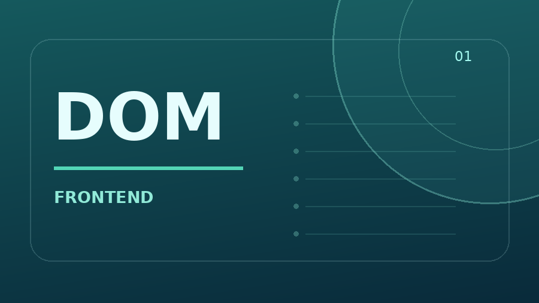

FrontendInicial
DOM en acción
Ejemplo visual de la estructura de una tarjeta. Debe desaparecer al generar el catálogo real.
45 min
Laboratorio de tecnología
Un catálogo de experiencias tecnológicas. Explora las áreas, escoge un nivel y activa las demostraciones con el ratón o desde el teclado.
Explorar por área

Ejemplo visual de la estructura de una tarjeta. Debe desaparecer al generar el catálogo real.
Pantalla de demostraciones
Selecciona una tarjeta y activa su demostración. También puedes utilizar las teclas del 1 al 9.
Las imágenes y los sonidos forman parte de la plantilla. No es necesario crear ni modificar los recursos multimedia.